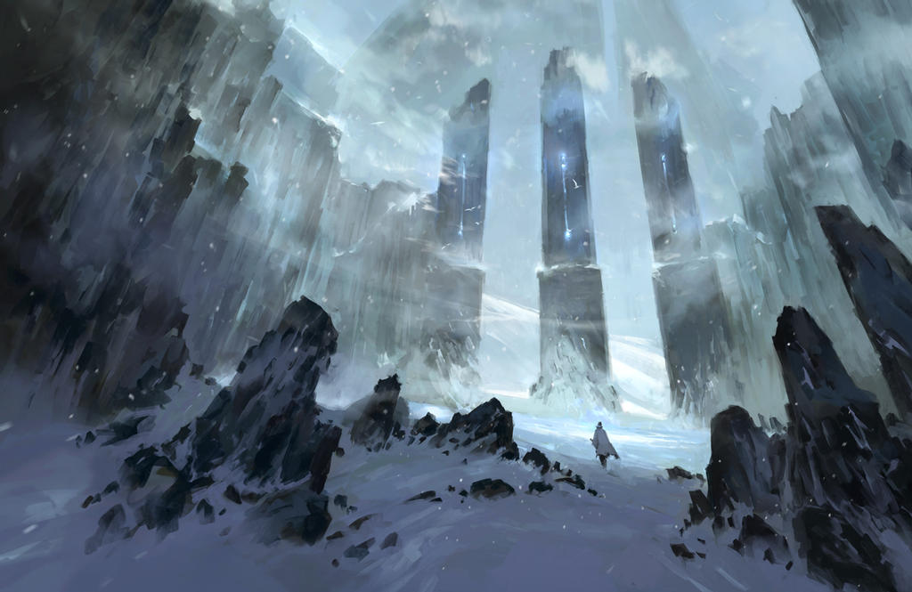
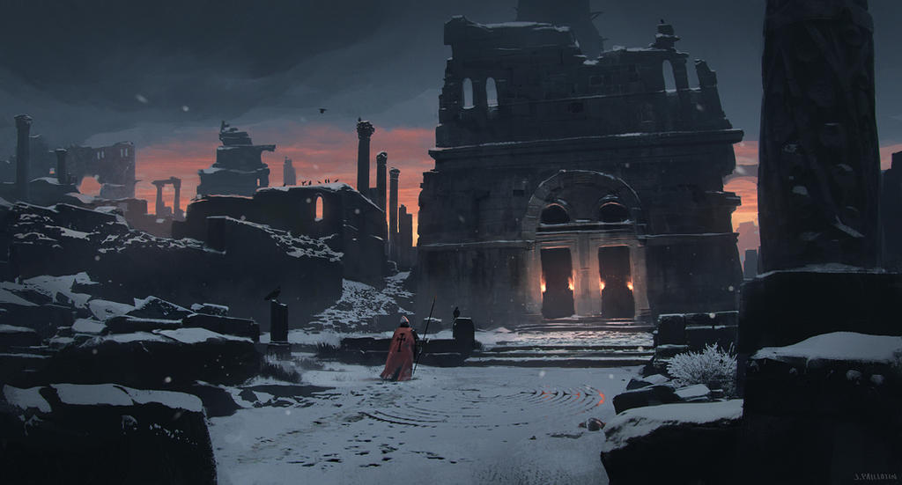
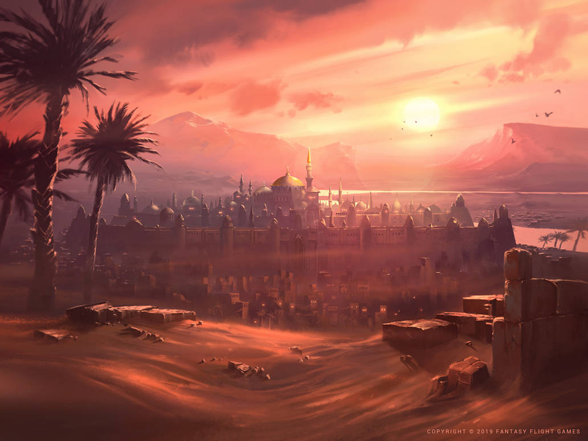
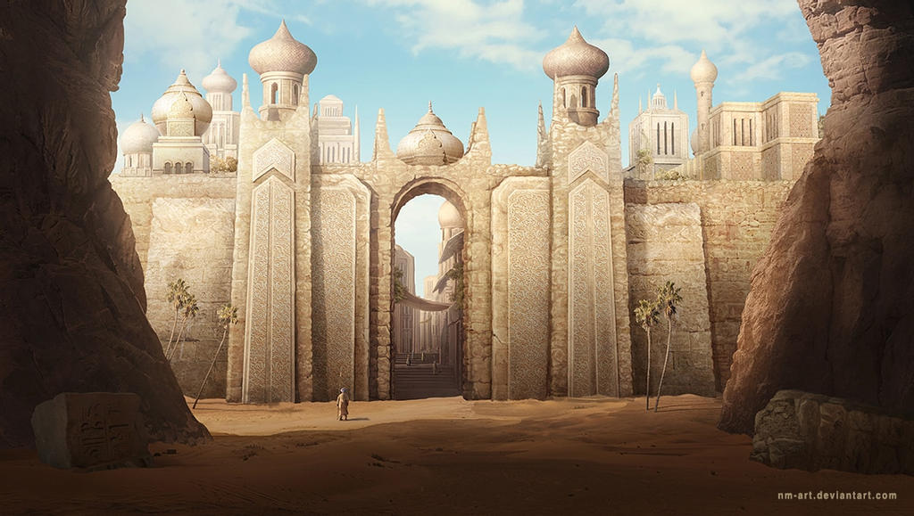
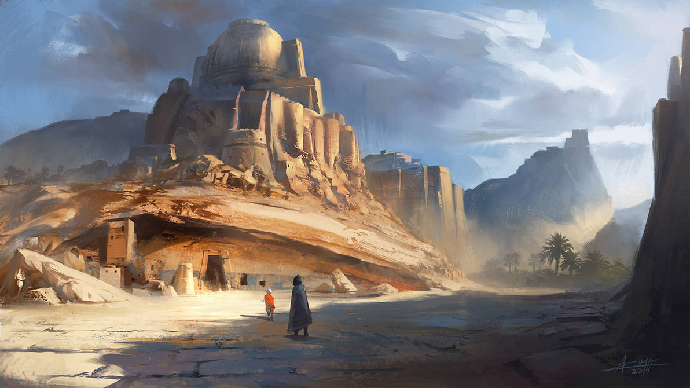

zonas destacadas
1Zonas de Nieve
Las principales zonas propensas a la nieve son las regiones polares, la mitad más septentrional del hemisferio norte y las regiones montañosas de todo el mundo con suficiente humedad y temperaturas frías. En el hemisferio sur, la nieve se limita principalmente a las zonas montañosas, aparte de la Antártida.
2Zonas Deserticas
Los desiertos pueden contener valiosos depósitos minerales que fueron formados en el ambiente árido, o fueron expuestos por la erosión. En las zonas bajas se pueden formar salares. Debido a la sequedad de los desiertos, son lugares ideales para la preservación de artefactos humanos y fósiles.
Imagenes de Mapas FanArt




